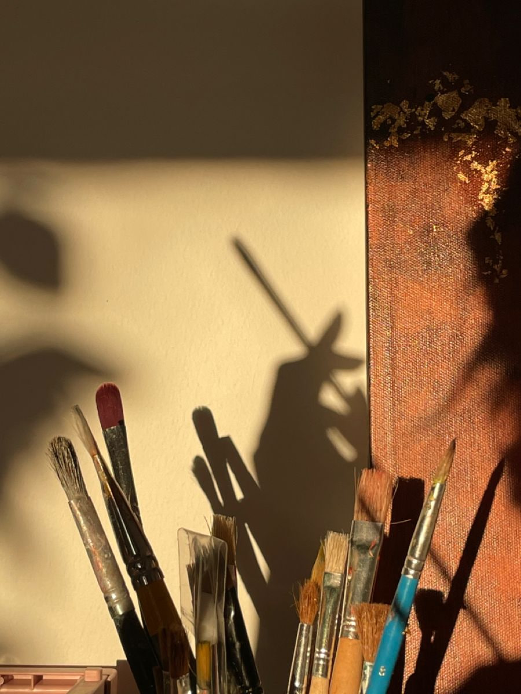
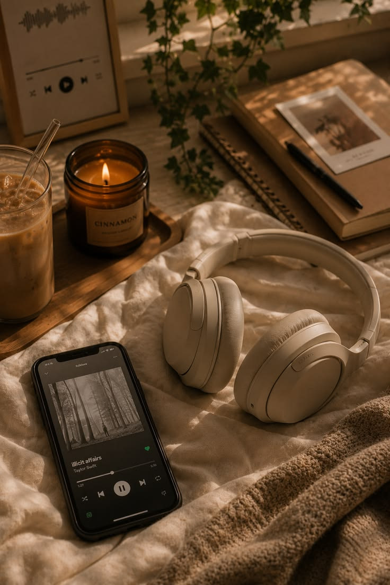
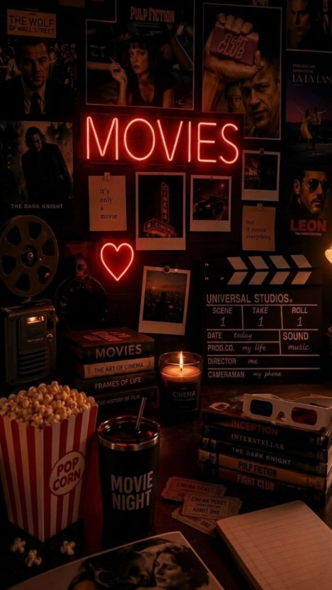
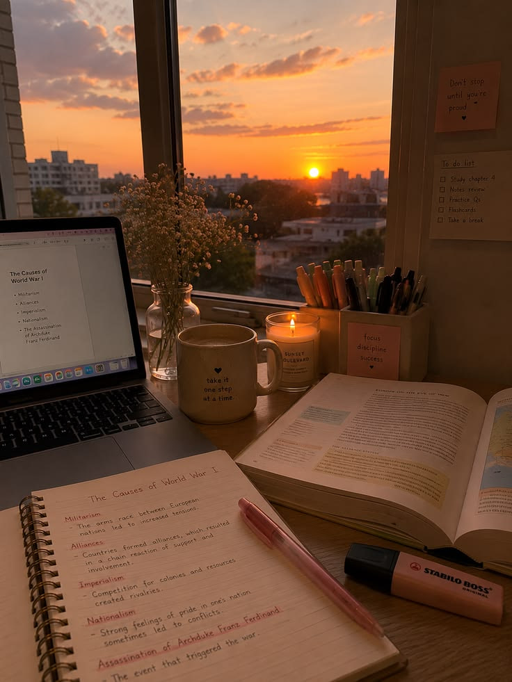
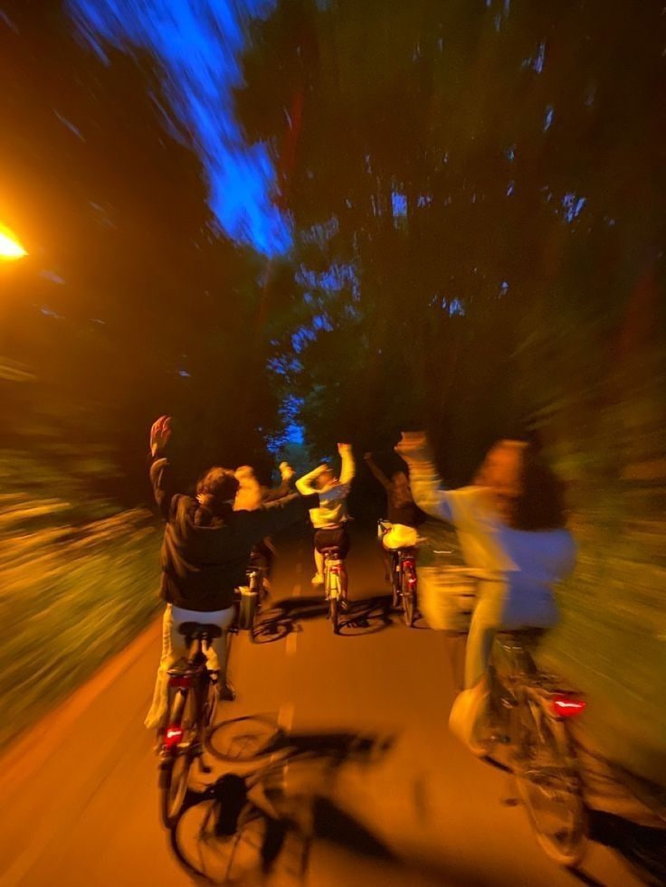

ART
Finding peace through color, drawing, painting, and creating.
WELCOME TO MY WORLD
Some things are big and unforgettable. Others are small and ordinary, but somehow make life feel a little more beautiful. The people we meet, the moments we experience, the things we create, and the little routines we come back to can all become meaningful in their own way. This is a collection of those things, the moments and details that make life feel like my own.
There are so many little things that make life feel special. These are some of the things I find myself coming back to again and again.

Finding peace through color, drawing, painting, and creating.

A way to slow down, feel everything, and just be in the moment

The people I can always come back to, laugh with, and be myself around.

Always growing, expanding my mind, and learning something new.

Trying new things, making memories, and letting life surprise me.